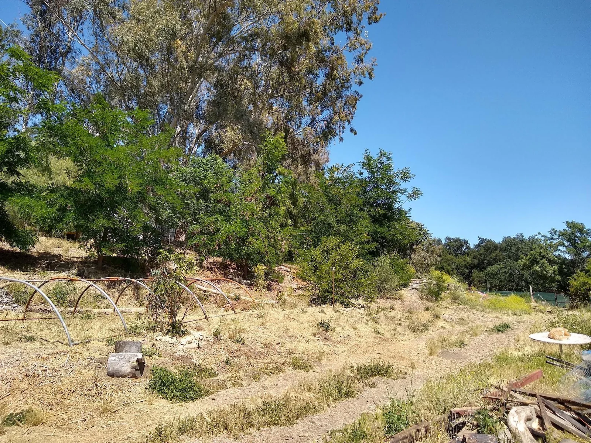
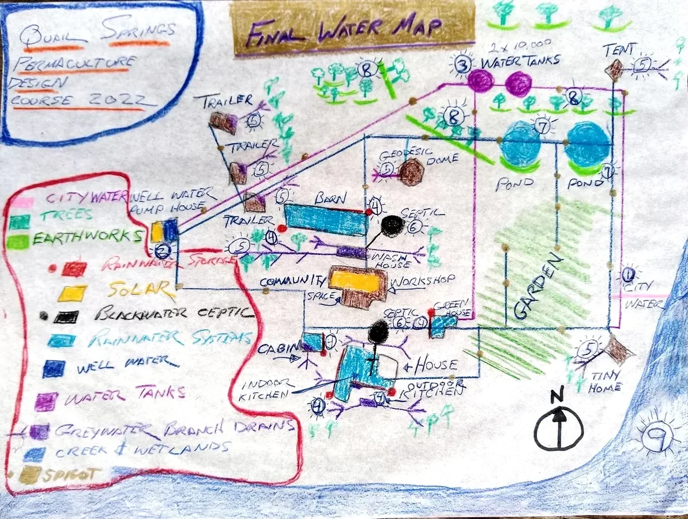
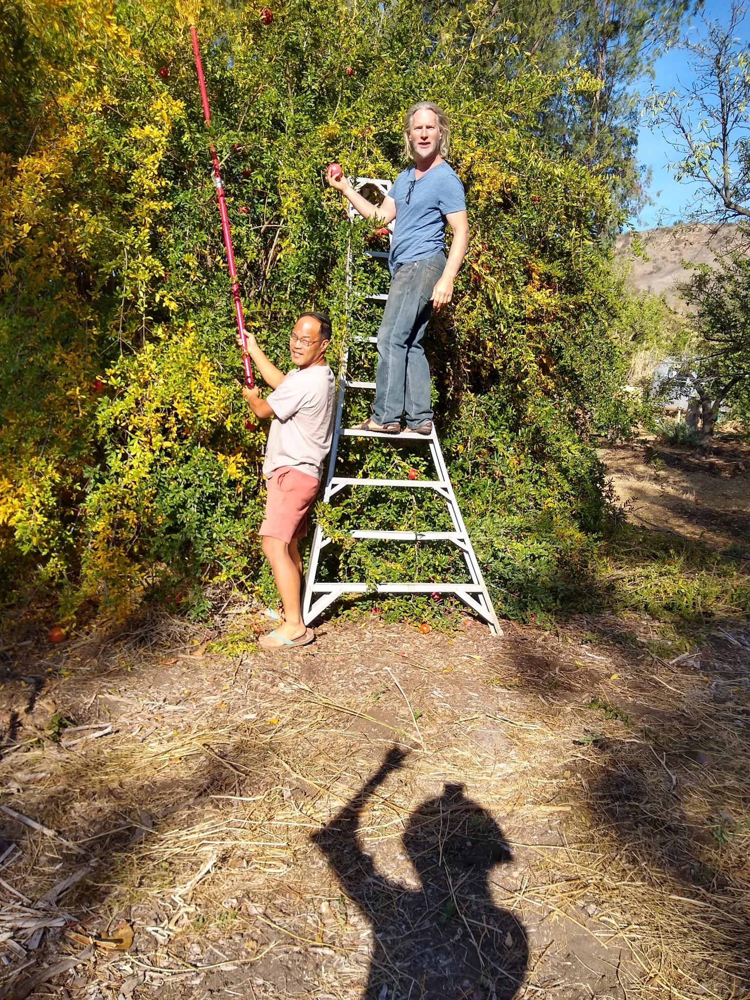

Northern rise
The two galvanized tanks occupy the highest developed ground, creating the possibility of gravity-fed emergency supply.
Chapter 04 · A field atlas of flow
At Full Circle Paradise, water arrives as winter rain, well water and municipal backup. The design challenge was to slow it, store it safely, use it more than once, and return it to soil and vegetation before it left the land.

The central design question
The workbook describes a developed but fragmented system: abundant winter runoff, a productive well, expensive municipal backup, two large tanks, many small dwellings, seasonal creek flow, clay-rich soils and greywater that often returned to the ground without being directed.
01 · Read the landscape first
The workbook identifies the property within the San Antonio Creek watershed, tributary to the Ventura River system. Across the farm, rain generally moves south toward Lion Creek, collecting on compacted roads and soaking more readily where mulch, roots and earthworks slow it.

The two galvanized tanks occupy the highest developed ground, creating the possibility of gravity-fed emergency supply.
Most daily water use occurs through the central dwellings, bathhouse, kitchens, garden and orchard areas. Compacted surfaces can pool water before it drains south.
The creek corridor is the seasonal receiving edge: wet, shaded, biologically rich and capable of rising dramatically during winter storms.
02 · Planned redundancy
The design did not depend on a single source. It treated the well as the everyday supply, municipal water as an expensive backup, and the hilltop tanks as emergency storage that needed safer operation.
The primary farm supply. The workbook records a solar pump and a distribution line serving kitchens, bathing, laundry, gardens and orchards.
Well house · workbook p. 16A high-pressure city connection could be opened when the well was insufficient, during equipment failure, severe dryness or fire risk.
Water survey · workbook p. 64Two 10,000-gallon tanks provided substantial reserve capacity, but the workbook records accidental draining, missing screens and unsafe untreated water.
Tank record · workbook pp. 15, 88–89

03 · The water already falling here
The apparent paradox of Southern California water is that a modest annual rainfall becomes an enormous volume when multiplied across five acres—and can arrive in short, erosive bursts.
Average year
≈2.7 million gallonsUsing the workbook’s 217,800-square-foot site area and 20 inches of annual rain.
Six-inch event
814,572 gallonsThe workbook’s design storm: enough water to expose every weak drainage path and compacted surface.
1,000-square-foot roof
3,740 gallonsAt six inches of rainfall—the calculation used in the workbook’s roof-catchment example.
The house, barn, greenhouse and cabin roofs were identified as practical catchment surfaces close to use.
Compacted roads created pooling and fast surface movement. Small diversions, basins and repaired grading could turn nuisance flow into infiltration.
Orchards and gardens already demonstrated that roots, mulch and organic matter could soften the effect of clay-rich soil.
The final plan proposed 2,500-gallon tanks at larger roofs and 1,000-gallon tanks at smaller structures.
04 · Use water more than once
With many small dwellings, kitchens, showers and washing machines, greywater was already returning to the land—but often in a single wet spot. The design proposed branch drains and valves that could spread suitable water across trees and garden beds.

05 · The largest reservoir is underfoot
The workbook repeatedly describes clay-rich or hydrophobic soil, rapid runoff on compacted surfaces, and improved absorption where the land had been mulched and planted. The proposed water system therefore treated soil structure as infrastructure.
Mulch reduces crusting and evaporation while giving rain time to enter the ground.
Swales, eyebrow basins and sunken beds interrupt downhill movement and concentrate infiltration around roots.
Perennial vegetation creates channels, shades soil and cycles water back through the living landscape.
Pooling, erosion, vigorous growth and dry patches reveal where the next small intervention belongs.

A working precedent
Rather than beginning with a completely new theory, the final plan expanded a pattern already visible on site: slow water above a tree, let it soak into the root zone, and repeat the idea at smaller scales with eyebrow swales and basins.
Swales and Persimmon Hill · workbook p. 89
07 · Connect the separate pieces
The 2022 proposal linked existing supply and storage with four new pathways: roof catchment, distributed greywater, ponds and expanded earthworks.

Retain as an emergency and seasonal backup.
Continue as the principal everyday supply.
Correct controls, screening, inspection and water-quality problems before relying on stored water.
Add tanks at the house, barn, greenhouse and cabin.
Spread suitable household discharge among perennial beds and orchard trees.
Keep blackwater and non-diverted wastewater in the appropriate treatment path.
Complete two excavated pond sites while addressing liners, evaporation and water source.
Extend successful contour work with smaller tree-scale infiltration features.
Preserve the seasonal wetland and accommodate floodwater safely.

The story continued beyond the workbook
Alpha lived at Full Circle Paradise and shared in the daily life of the farm. He and Robert remained close friends: Robert later visited him at Lost Valley Community in Oregon; they traveled together through Mexico and Guatemala; and they reunited in Portugal in 2024.
Through the Climate Water Project, Alpha’s later public work investigates how ecology and climate interact through the water cycle. His essays and conversations explore groundwater, landscape hydration, vegetation, rainfall recycling, nature-based restoration, and the connected cycle of drought, fire and flood.
08 · Open the notebook
These short entries preserve useful details, contradictions and design lessons from across the workbook. Open any note for its source pages.
At about 20 inches annually, the workbook calculates roughly 2.7 million gallons falling on the property. The limiting factor is not only rainfall quantity, but timing, infiltration, safe storage and summer demand.
Workbook pp. 65–66Different sections list depths from 160 to 250 feet and outputs from 20 to 60 gallons per minute. The discrepancy is itself valuable: future system work should begin with verified pump, casing, static-water and production records.
Workbook pp. 16, 39, 64, 68, 88Two 10,000-gallon tanks sound secure, yet the workbook records open spigots draining them, missing insect screens and illness after untreated tank water was supplied to the house. Capacity without management is not resilience.
Workbook pp. 15, 88–89The city line served as a redundant path during high summer demand, fire danger or well failure. Its cost and treatment made it less desirable for everyday irrigation, but useful as backup.
Workbook pp. 64, 68, 88The final plan paired larger house and barn roofs with proposed 2,500-gallon tanks, and smaller greenhouse and cabin roofs with 1,000-gallon tanks. Storage was placed near collection and use.
Workbook p. 89Kitchen, laundry, reverse-osmosis and small-dwelling water already reached soil in several places. The design intervention was not to invent reuse, but to make it deliberate, distributed and safer.
Workbook pp. 64–65, 83–84, 89The workbook describes slow absorption and road pooling, but also notes that extensive mulch and vegetation improved infiltration. The same soil that sheds water when compacted can hold substantial moisture when protected and biologically active.
Workbook pp. 68, 76–78, 104Earlier hillside earthworks intercepted runoff and supported thriving persimmons. The final design proposed repeating the pattern through smaller eyebrow swales around trees.
Workbook p. 89Two basins had already been excavated, but liners and completion costs stopped the project. The final plan imagined water, fish, fruit trees, shade and community seating around them—while acknowledging evaporation and supply constraints.
Workbook pp. 89, 92The creek can rise dramatically in winter, then dry during summer. Its dense vegetation, frogs, moist soil and wildlife value argue for careful access and selective maintenance rather than wholesale clearing.
Workbook pp. 61–62, 68, 89Pond work began in Year 1, greywater branching and filling ponds appeared in Year 2, broad roof harvesting in Year 3, and selective creek access in Year 4. The sequence recognized labor, money and learning limits.
Workbook p. 101The final narrative links uncertain groundwater, climate-appropriate crops, perennial planting, rain harvest, greywater basins, swales and sunken beds. Water was not treated as a separate utility but as a relationship among soil, vegetation and community.
Workbook pp. 103–10409 · From drawing to sequence
The original five-year plan mixed water projects with vegetation, animals, energy and community systems. Read as a water sequence, it suggests a useful progression from stopping waste to building landscape-scale resilience.
Document the well, inspect tanks, repair leaks, label valves, install screens and decide which stored water is safe for which uses.
Reassess the excavated ponds, liners, shade and realistic filling strategy before investing further.
Use branch drains and valves to serve perennial plantings near kitchens, dwellings, bathhouse and laundry.
Add appropriately sized tanks, first-flush protection, screened inlets, overflows and planted infiltration areas.
Expand basins and contour features based on storm observations, while protecting Lion Creek’s flood and habitat functions.
Source & lineage
This page is grounded in Robert Redecker’s 112-page Full Circle Farm design workbook, completed through the Quail Springs Online Permaculture Design Course in 2022. Page references link observations and proposals back to their original context. Later reflections and Alpha’s public work are clearly separated from the historical workbook record.